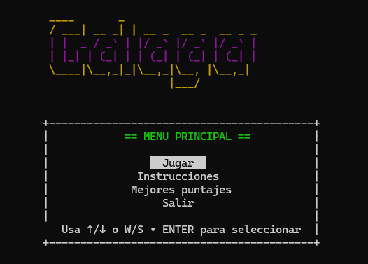

No. 005
Tipo Juego
Galaga
Galaga programado con C++ trabajando con threads.
Tecnologías
Qué demuestra
El proyecto demuestra el uso de hilos porque permite que el juego ejecute procesos de forma paralela mientras la partida está activa. En lugar de que todo ocurra en una sola secuencia bloqueante, el programa puede mantener la lógica principal del juego funcionando al mismo tiempo que controla otras acciones, como la actualización del entorno o el comportamiento interno del juego.
Reflexión
Este proyecto fue interesante al experimentar cómo se trabaja con hilos, observando un mejor comportamiento en el juego en comparación con un código normal.